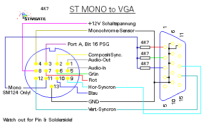

|

ST MONO output to VGA Display

After a lot of digging around in magazine back-issues and some
hardware books, atari manuals, i found some following informations.
Here are the connection details for an ST(e) to VGA monitor:
Tabelle 118: ST Computer to VGA Display
| ST pin number |
Color/Signal |
VGA pin number |
Color/Signal |
|
|
|
|
| 7 |
Red |
1 |
Red |
| 6 |
Green |
2 |
Green |
| 10 |
Blue |
3 |
Blue |
| 9 |
H Sync |
13 |
H Sync |
| 12 |
V Sync |
14 |
V Sync |
| 13 |
GND |
10 |
GND |
| 13 |
GND |
6 |
Red Return |
| 13 |
GND |
7 |
Green Return |
| 13 |
GND |
8 |
Blue Return |
| 13 |
GND |
10 |
GND |
| 13 |
GND |
11 |
GND |
Note:
To work in this mode, the monitor must be able to operate at a
line frequency of 15.5 KHz. Other modes won't work. This schematic
works for ST low, and med mode.
If you like to use ST Mono (ST high mode) out as Video signal,
watch the following schematic.
Note:
This only works as monocrome!
Your display must handle a refesh rate of 71Hz!

Abbildung 1 - ST to VGA as MONOCROME only Display
|